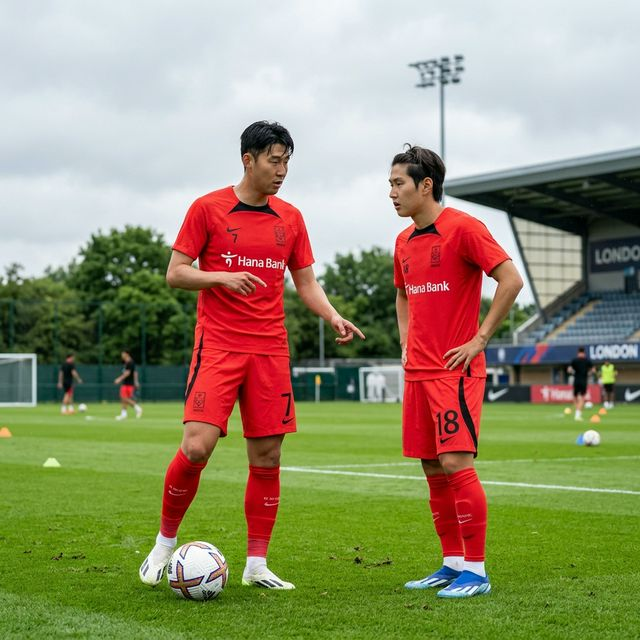
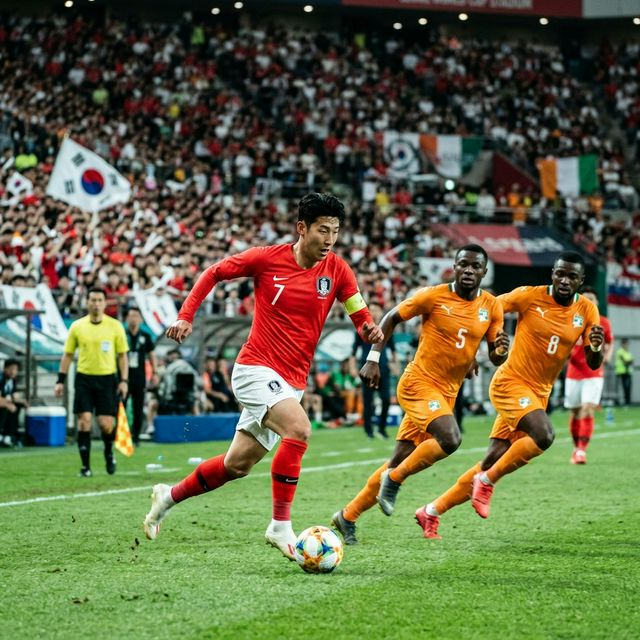
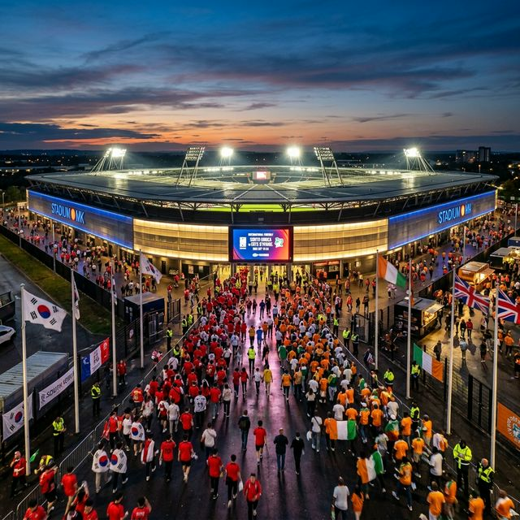

많은 분들이 궁금해하셨을 겁니다. "왜 하필 런던에서, 하필 코트디부아르인가?" 그 답은 명확합니다. 대한민국은 다가올 2026 북중미 월드컵 조별리그에서 강력한 피지컬의 대명사 '남아프리카공화국'을 상대해야 합니다. 코트디부아르는 아프리카 예선 10경기 무패 행진을 달리며 월드컵 직행 티켓을 따낸 현시점 아프리카 최강팀 중 하나입니다.
탄탄한 수비력(예선 무실점)과 유럽 빅리그(EPL, 세리에 A)에서 활약하는 스타플레이어들이 포진한 코트디부아르는 가상의 남아공으로서 최적의 조건을 갖추고 있습니다. 홍명보 감독은 이번 경기를 통해 아프리카 특유의 탄력 넘치는 개인 기량과 빠른 전환 속도를 우리 수비진이 어떻게 억제할 수 있을지를 실험하려 합니다.
기존의 포백 시스템을 선호하던 홍명보 감독이 최근 들어 스리백(3-Back), 정확히는 3-4-3 또는 3-5-2 포메이션을 강조하고 있습니다. 이는 단순한 수비 강화가 아니라 **'중원 장악력'과 '측면 공격의 세밀함'**을 동시에 잡겠다는 의도가 깔려 있습니다.
스리백의 핵심은 김민재 선수입니다. 김민재 선수는 단순히 수비수로서 상대 공격을 막는 데 그치지 않고, 빌드업 시 스위퍼 역할을 수행하며 정확한 롱패스로 이강인과 손흥민에게 직접 기회를 제공합니다. 김민재의 파트너로 나설 김태현과 조유민은 좌우 공간을 커버하며 투박한 아프리카 윙어들의 뒤 공간 침투를 미연에 방지하는 막중한 임무를 띠고 있습니다.
코트디부아르는 더 이상 과거 디디에 드로그바 시절의 투박한 팀이 아닙니다. 현재 그들은 기술적인 세련미까지 갖추고 있습니다. 특히 우리가 경계해야 할 인물들은 프리미어리그에서 매주 활약을 펼치는 주전급 선수들입니다.
빠른 감각과 화려한 발재주를 지닌 우측 윙어. 우리 측면 스피드 테스트의 핵심 대상입니다.
강력한 피지컬의 스트라이커. 김민재와의 공중볼 다툼은 내일 경기의 최대 하이라이트입니다.
전통적인 아프리카 홀딩 미드필더의 전형. 황인범 또는 백승호와의 중원 싸움이 승패를 가를 것입니다.

솔직히 말씀드리면, 지난 몇 경기에서 손흥민과 이강인 선수의 동선이 겹치는 모습이 간혹 보였습니다. 이강인이 중앙으로 좁혀 들어오고 손흥민이 측면에서 안쪽으로 파고들 때 공간이 협소해지는 현상이었는데요.
홍명보 감독은 런던 훈련 도중 이 문제를 해결하기 위해 **'손흥민의 제로톱(False Nine)'** 활용 카드를 만지작거리고 있습니다. 손흥민이 원톱 또는 쉐도우 스트라이커로 서서 좌우로 공간을 벌려주면, 이강인이 중앙의 빈 공간을 활용해 킬패스를 찌르거나 중거리 슛을 시도하는 시나리오입니다.
손흥민 선수에게 런던은 안방과 다름없습니다. 기온, 습도, 잔디 상태 모두 그가 가장 선호하는 조건이죠. 토트넘 홋스퍼 경기장 근교에서 열리는 이번 경기기에, 손흥민 선수의 소속팀 동료들도 대거 관람할 예정이라고 하는데요. 캡틴의 자존심이 걸린 만큼 그의 득점포를 기대하지 않을 수 없습니다.
한국과 코트디부아르의 상대 전적은 단 1전입니다. 바로 2010년 3월, 남아공 월드컵을 앞두고 런던에서 열렸던 평가전인데요. 당시 한국은 **이동국의 환상적인 발리슛과 곽태휘의 헤더 골로 2-0 완승**을 거두었습니다. 당시 상대 팀엔 무려 드로그바와 투레 형제가 버티고 있었음에도 거둔 승리라 그 의미가 컸죠.
재미있게도 16년이 흐른 지금, 다시 한번 2026 월드컵을 앞두고 런던에서 만났습니다. 역사는 반복된다고 하죠? 홍명보호가 선배들의 기운을 이어받아 시원한 승리를 거둘 수 있을지 귀추가 주목됩니다.
| 날짜 | 장소 | 결과 | 비고 |
|---|---|---|---|
| 2010.03.03 | 영국 런던 | 대한민국 2 : 0 승 | 이동국, 곽태휘 득점 |
| 2026.03.28 | 영국 밀턴킨스 (런던 근교) | 예정 | 2026 월드컵 최종 점검 |

이번 경기는 런던 외곽 밀턴킨스의 **스타디움 MK**에서 열립니다. 현장 분위기를 안방에서 생생하게 즐기시려면 아래 정보를 꼭 기억하세요.
또한, 해외에 거주하시는 한인분들은 현지 스포츠 채널(유로스포츠 등)을 통해서도 관람이 가능하다고 하니 각 지역 중계권을 확인하시기 바랍니다. 런던은 현재 낮 온도가 10도 초반으로 쌀쌀한 편이니, 현지 직관 가시는 분들은 두꺼운 외투를 꼭 챙기셔야 합니다.
최근 공식 인터뷰에서 홍명보 감독은 "결과보다 과정이 중요하다"라고 말하면서도 눈빛에는 단호함이 서려 있었습니다. 그는 "아프리카 팀들의 탄력과 스피드를 상대로 우리가 90분 내내 높은 집중력을 유지할 수 있는지가 핵심"이라며 수비 조직력을 재차 강조했는데요.
특히 후반전에 투입될 양민혁, 배준호 등 차세대 신성들이 코트디부아르의 지친 수비진을 어떻게 휘저어 놓을지도 중요한 전술 포인트입니다. 배준호의 창의적인 침투 패스가 후반 30분 이후 승부를 결정지을 조커 카드가 될 것으로 보입니다.
전문가들은 한국의 **2-1 승리** 또는 **1-1 무승부**를 예측하고 있습니다. 하지만 우리의 캡틴 손흥민과 이강인의 컨디션이 역대 최고조라는 점을 감안하면 다득점 승리도 충분히 가능해 보입니다. 시원한 중거리 슛 한 방으로 런던의 밤하늘을 수놓길 기원해 봅니다.